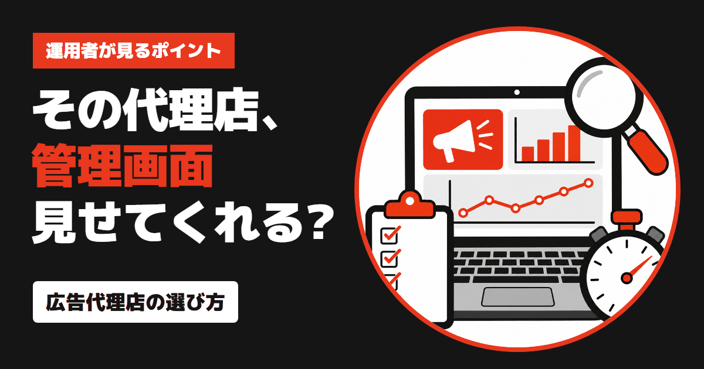

コラム ／ 広告運用
広告代理店の選び方。運用者が見る4つのポイントと、Googleが代理店に求めているルール

広告代理店を選ぶとき、提案書の見栄えや実績の数より先に確かめたいことがあります。運用型広告の運用を続けてきた立場から、運営者が重視する4つのポイントと、Googleが代理店に求めている公式のルール、商談で聞くべき質問をまとめました。
広告代理店を選ぶとき、多くの方が提案書の内容や実績の社数、手数料率を比べます。どれも大切ですが、運用が始まってから「こんなはずではなかった」となる原因は、たいてい別のところにあります。広告費の中身が見えない、問い合わせへの返事が遅い、管理画面の数字の報告だけで事業の話にならない、毎月やっていることが変わらない、といったことです。
この記事では、運用型広告の運用に7年間携わってきた運営者(SET UP 代表)が、代理店を選ぶときに重視するポイントを整理します。あわせて、Googleが広告代理店などの第三者に求めている公式のルール(サードパーティ ポリシー)を紹介します。Googleのルールは、2026年11月19日に公式ヘルプで確認した内容です。
結論:見るのは4つのポイント
- アカウントを開示してくれるか:広告の管理画面を、広告主が見られる状態にしてくれるか。
- レスが早いか:問い合わせや依頼への返事が早く、連絡の経路が短いか。
- 管理画面の外の数字まで意識してくれるか:申し込みの件数だけでなく、その後の成約や、顧客が生涯にもたらす利益(LTV)まで見て判断してくれるか。
- 施策の量とスピード:毎月、何をどれだけ試し、結果を次にどう生かすかが具体的か。
手数料率や実績も比べる価値はありますが、この4つが欠けていると、どれだけ条件が良くても成果につながりにくい、というのが運営者の考えです。
選ぶ前に、自社で決めておくこと
代理店に相談する前に、次の3つを決めておくと、提案を同じ物差しで比べられます。
1. 何件を、いくらで取りたいか
月に何件の問い合わせや購入が欲しいか、1件にいくらまでかけられるか。1件あたりの上限は、広告の外にある数字(粗利、成約率、リピート率)から決まります。この考え方は「広告のレポートで、最初に見るべき3つの数字」で詳しく書いています。
2. 予算と期間
月の広告費の上限と、まず何か月で判断するかを決めておきます。代理店によって、最低の手数料や契約期間が違うためです。
3. どこまで任せるか
広告の運用だけを任せるのか、LP(広告の着地ページ)の改善や計測(GA4・タグ)の設定まで含めるのかを決めます。任せる範囲が違えば、見積もりの比べ方も変わります。
運用者が重視する4つのポイント
1. アカウントを開示してくれるか
運営者がいちばん重視するのが、広告アカウントの開示です。広告主が管理画面を見られない状態では、報告書に書かれた広告費が、実際に広告媒体から請求された金額と合っているかを確かめる手段がありません。手数料が広告費に混ぜて報告されていても、気づくことができないのです。
Googleも、代理店に対して、広告費は Google からの請求額を正確に報告し、代理店の料金を含めないことを求めています(後述のサードパーティ ポリシー)。管理画面を見せてもらえれば、広告費・クリック数・表示回数を、報告書と突き合わせられます。
- 広告主の Google アカウントに、管理画面の閲覧権限を付けてもらえるか
- Google 広告の「お客様ID」を教えてもらえるか
- 解約したとき、アカウントやデータはどうなるか
開示を嫌がる、または「社外秘なので」と管理画面を見せない場合は、理由をよく聞いたほうが安全です。
2. レスが早いか
広告は、止めるべきときに止められないと、その間も費用が出ていきます。入稿ミスで意図しないページに誘導していた、在庫が切れた商品の広告が出続けている、セールの開始に予算が間に合わない。こうした場面では、数時間の差が費用の差になります。
返事の早さは、契約してから分かるものではありません。商談から契約までのやりとりの速さが、そのまま運用中の速さの目安になります。あわせて、次の点を確認します。
- 普段の連絡手段は何か(チャットツール、メール、営業担当経由など)
- 運用担当に直接連絡できるか、それとも営業担当を経由するか
- 急ぎの依頼(停止・予算変更)に、どのくらいで対応できるか
3. 管理画面の外の数字まで意識してくれるか
広告の管理画面に表示される「コンバージョン」は、多くの場合、問い合わせや申し込みの時点までです。しかし事業にとって大事なのは、その後に商談になったか、契約したか、続けて買ってくれたかです。申し込みの件数が増えても、成約につながらない申し込みばかりなら、広告費は事業の役に立っていません。
Google 広告には、広告をクリックした後の店舗や電話での成約など、オフラインでの成果を取り込む「オフライン コンバージョンのインポート」という仕組みがあります。Googleは現在、これから始める場合はその改良版である「リードの拡張コンバージョン」から始めることを勧めています。こうした仕組みを使えば、管理画面の中で「成約につながった広告」を見分けられるようになります。
代理店がここまで提案してくれるかは、次のような質問で分かります。
- 申し込みの後の成約率や、顧客単価を聞いてくるか
- 成約のデータを、広告の判断に反映する方法を提案してくれるか
- 獲得単価だけでなく、LTV(顧客が生涯にもたらす利益)を前提にした上限の考え方を話せるか
4. 施策の量とスピード
運用型広告は、試して、結果を見て、次を決める、の繰り返しで成果が積み上がります。毎月のレポートが「数字の報告」だけで、何を試したか、次に何をするかが書かれていない状態が続くなら、運用は止まっているのと同じです。
商談では、「最初の3か月で、何をどれだけ試すか」を具体的に聞きます。広告文の検証、配信先やターゲティングの見直し、LPの改善提案、計測の整備など、項目と順番を答えられる代理店は、契約後も手が動くことが多いと考えています。
Googleが代理店に求めているルール
Googleは、広告主の代わりに Google 広告を購入・管理する代理店などの第三者に向けて、「Google サードパーティ ポリシー」を定めています。広告主の側から見ると、「代理店にこれは求めてよい」という目安になります。主な内容は次のとおりです。
| 項目 | 公式ヘルプの内容(要旨) |
|---|---|
| 広告費と成果の報告 | 月別のレポートを提供する場合は、アカウントごとに費用・クリック数・表示回数を含める。広告費は Google からの請求額を正確に報告し、代理店の料金を含めない。広告主が自分でアカウントにログインして確認できるようにする方法もある。 |
| 管理費用 | Google 広告の費用とは別に管理費用を請求する場合は、広告主に知らせる。新しい顧客には、最初の営業活動の前に少なくとも文面で伝え、明細書に記載する。 |
| お客様ID | 広告主が Google に直接連絡できるよう、求めがあれば Google 広告のお客様IDを広告主に提供する。 |
| 禁止されている行為 | Googleとの提携を偽る、検索結果の最上位への掲載を保証する、常に広告が出ると主張する、無料の Google のサービスを有料と説明する、費用の算出方法について偽る、など。何度も勧誘の電話をかける、契約や更新を強く迫る、といった営業も禁止。 |
このポリシーから、広告主として次のことを求めてよいと分かります。
- 広告費は、手数料と分けて報告してもらう
- 管理費用(手数料)は、契約の前に書面で示してもらう
- お客様IDを教えてもらう
また、「必ず1位に表示されます」「成果を保証します」といった説明は、それだけで注意が必要です。このポリシーは Google 広告についてのもので、Yahoo!広告やMeta広告などには、それぞれの媒体の規約があります。
商談で聞くべき10の質問
4つのポイントと、契約の条件を確かめるための質問です。答えの内容だけでなく、すぐに具体的に答えられるかも見ます。
| 質問 | 確かめたいこと | 注意したい答え |
|---|---|---|
| 1. 管理画面を、こちらの権限で見られますか | アカウントの開示 | 「レポートでお伝えします」だけで、閲覧を認めない |
| 2. 広告費は、手数料と分けて報告されますか | 費用の透明性 | 広告費と手数料をまとめた金額しか出てこない |
| 3. 広告アカウントは、誰の名義になりますか | 解約時の引き継ぎ | 代理店名義で、解約時の扱いが決まっていない |
| 4. 普段の連絡手段と、返信の目安は | レスの早さ | 窓口が営業担当だけで、運用担当とは話せない |
| 5. 実際に運用するのは、どなたですか | 担当と体制 | 提案した人と運用する人が別で、担当が決まっていない |
| 6. 申し込みの後の成約や、LTVをどう扱いますか | 管理画面の外の数字 | 獲得件数と獲得単価の話しか出てこない |
| 7. 最初の3か月で、何をどれだけ試しますか | 施策の量とスピード | 「まずは様子を見て」で、具体的な項目が出ない |
| 8. 手数料に含まれる作業と、別料金の作業は | 費用の範囲 | レポート作成・計測設定・初期設定が、あとから別料金になる |
| 9. 最低手数料・初期費用・契約期間・解約の条件は | 総額と縛り | 長い契約期間と違約金があり、途中でやめにくい |
| 10. 成果について、どう約束していますか | 説明の誠実さ | 成果や掲載順位を「保証」すると言う |
見積もりは「1年の総額」で比べる
手数料率だけを比べると、最低手数料や初期費用、契約期間の違いを見落とします。月の広告費を決めたら、1年でいくら払うことになるかを計算して比べます。
次は、計算の仕方を示すための仮の条件です。実在の代理店の料金ではありません。
| A社(仮) | B社(仮) | |
|---|---|---|
| 手数料率 | 広告費の20% | 広告費の15% |
| 最低手数料 | なし | 月8万円 |
| 初期費用 | 5万円 | 0円 |
| 広告費 月40万円の1年の総額(手数料+初期費用) | 101万円 (8万円×12か月+5万円) | 96万円 (15%は6万円だが、最低手数料の8万円×12か月) |
| 広告費 月100万円の1年の総額(手数料+初期費用) | 245万円 (20万円×12か月+5万円) | 180万円 (15万円×12か月) |
このほか、レポート作成費、計測の設定費、クリエイティブの制作費が別にかかるかも、総額に足します。最低手数料による実際の料率や、消費税を含めた毎月の総額の計算は「広告運用代行の手数料。「20%」より先に確認したい、最低手数料と1か月の総額」で詳しく書いています。契約期間が6か月や1年と決まっている場合は、途中でやめたときにかかる費用も確認しておきます。
アカウントの名義は、契約の前に決める
広告アカウントを代理店の名義で作る場合、解約するときにアカウントやこれまでのデータを引き継げるかは、代理店ごとに違います。広告主の名義で作るか、代理店の名義でも解約時に引き継げるかを、契約書で確認しておくと、あとで代理店を変えるときに困りません。
今の代理店を見直したいサイン
すでに代理店に任せている場合は、4つのポイントの裏返しが、見直しのサインになります。
- 管理画面を見せてもらえず、広告費と手数料が分けて報告されない
- 依頼や質問への返事が遅く、急ぎの停止や変更に時間がかかる
- 報告が管理画面の数字だけで、成約や売上の話にならない
- 毎月のレポートに、試したことと次にやることが書かれていない
いきなり代理店を変える前に、まず管理画面の閲覧権限をもらい、自分の目で数字を確かめるところから始めると、判断の材料がそろいます。
よくある質問
- Q. 手数料は、いくらが適正ですか?
- 手数料率だけでは判断できません。最低手数料、初期費用、別料金の作業、契約期間で、1年の総額は大きく変わります。手数料の中にどんな作業が含まれているか(レポート、計測の設定、改善提案など)と合わせて比べてください。
- Q. 大手の代理店と、小さな代理店のどちらがよいですか?
- 規模より、4つのポイントを満たすかで選ぶのがよいと考えています。大手は体制や仕組みが整っている一方、担当の交代が起きることがあります。小規模の代理店や個人は、担当が固定されやすい一方、対応できる媒体や業務の範囲を確認する必要があります。
- Q. 代理店を途中で変えても、成果は落ちませんか?
- アカウントやデータを引き継げるかで変わります。広告主の名義のアカウントなら、運用者が変わっても、これまでのデータを使って運用を続けられます。代理店の名義の場合は、引き継ぎの可否を先に確認してください。
- Q. 管理画面を見せてほしいと言うのは、失礼になりませんか?
- なりません。広告費を出しているのは広告主です。Google のサードパーティ ポリシーでも、広告主が自分でアカウントにログインして費用と成果を確認できるようにすることが、報告の方法の1つとして挙げられています。
まとめ
- 代理店選びで見るのは、アカウントの開示、レスの早さ、管理画面の外の数字(成約・LTV)、施策の量とスピードの4つ
- Googleは代理店に、広告費を請求額のとおり報告すること、管理費用を事前に書面で伝えること、求めがあればお客様IDを渡すことを求めている
- 「必ず1位」「成果を保証」といった説明には注意する
- 見積もりは手数料率ではなく、最低手数料・初期費用・契約期間を含めた1年の総額で比べる
- アカウントの名義と、解約時の引き継ぎを、契約の前に確認する
運用型広告の運用代行のご相談
SET UP は、Google・Yahoo!・Metaなどの運用型広告の運用代行を行っています。費用は広告費の15%(最低運用費 月10万円)、初期費用は0円、契約期間の縛りはありません。広告アカウントは、ご希望の名義で開設します。すでに広告を配信中の方には、無料のアカウント診断も行っています。